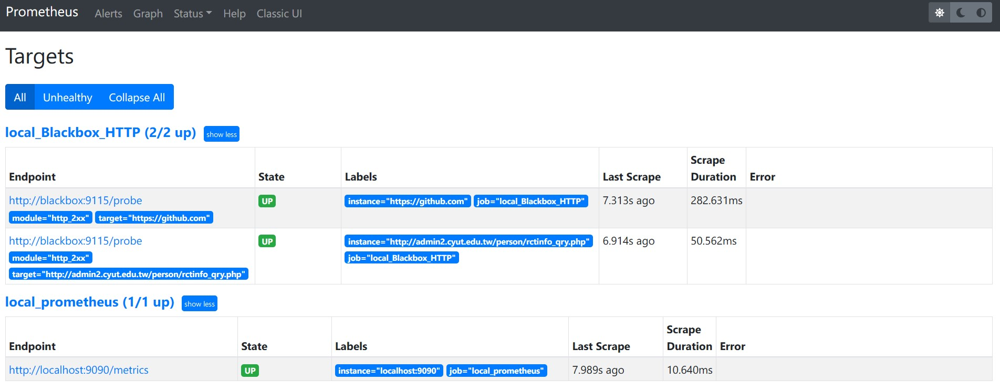
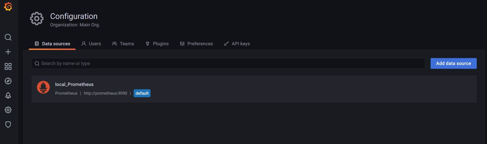
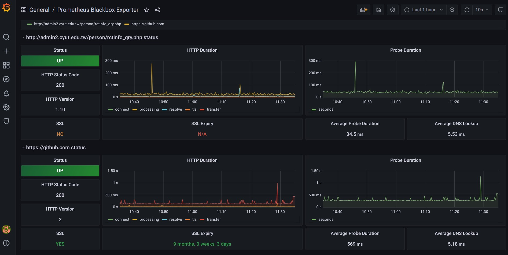

此篇筆記紀錄如何使用 docker run --link ... 讓容器與容器之間連結。順便給 Upton 參考監控 LAB 要怎麼出~
Blackbox_expoter
1
|
docker run -itd --name blackbox_expoter -p 9115:9115 -v /root/yml/blackbox_expoter/:/config --restart always prom/blackbox-exporter:master --config.file=/config/blackbox.yml
|
blackbox.yml
更多範例 可以從 blackbox_expoter/example.yml 尋找。
關於設定檔 Document 這邊請 blackbox_exporter/CONFIGURATION.md 。
1
2
3
4
5
6
7
8
9
10
11
12
|
modules:
icmp:
prober: icmp
timeout: 5s
icmp:
preferred_ip_protocol: "ipv4"
http_2xx:
prober: http
timeout: 5s
http:
method: GET
preferred_ip_protocol: "ip4"
|
因為公司環境並沒有使用 IPv6 因此要另外加上 preferred_ip_protocol: "ip4" 不然預設值都是使用 IPv6
reload blackbox config
Blackbox 可以支援在運作時 reload 設定檔。 如果新的設定檔是不符合規範 (well-formed) 的，那將不會替換。
If the new configuration is not well-formed, the changes will not be applied
除了傳送 SIGHUP 訊息能夠使 blackbox reload config 之外，另外一種方法就是 傳送 HTTP POST 給它。
使用 curl -v 能夠看到過程詳細資訊 (安心)
1
2
3
4
5
6
7
8
9
10
11
12
13
14
15
|
curl -vX POST http://192.168.207.107:9115/-/reload
* About to connect() to 192.168.207.107 port 9115 (#0)
* Trying 192.168.207.107...
* Connected to 192.168.207.107 (192.168.207.107) port 9115 (#0)
> POST /-/reload HTTP/1.1
> User-Agent: curl/7.29.0
> Host: 192.168.207.107:9115
> Accept: */*
>
< HTTP/1.1 200 OK
< Date: Wed, 30 Jun 2021 01:07:14 GMT
< Content-Length: 0
<
* Connection #0 to host 192.168.207.107 left intact
|
Prometheus
Prometheus Installation Document
1
|
docker run -itd --name prometheus -v /root/yml/prometheus/prometheus.yml:/etc/prometheus/prometheus.yml -p 9090:9090 --link blackbox_expoter:blackbox --restart always prom/prometheus
|
如果要命名 docker volume 的話，映射路徑: -v <named_volume>:/prometheus
參考資料 prometheus Dockerfile (從 VOLUME 判斷)
1
2
3
4
5
6
7
8
9
10
11
12
13
14
15
16
17
18
19
20
21
22
23
24
25
26
|
global:
scrape_interval: 15s # Set the scrape interval to every 15 seconds. Default is every 1 minute.
evaluation_interval: 15s # Evaluate rules every 15 seconds. The default is every 1 minute.
scrape_configs:
- job_name: 'local_prometheus'
static_configs:
- targets: ['localhost:9090']
## local_BlackBox HTTP
- job_name: 'local_Blackbox_HTTP'
metrics_path: /probe
params:
module: [http_2xx]
static_configs:
- targets:
- https://github.com
- http://admin2.cyut.edu.tw/person/rctinfo_qry.php ## school always a good place to find http without TLS. :)
relabel_configs:
- source_labels: [__address__]
target_label: __param_target
- source_labels: [__param_target]
target_label: instance
- target_label: __address__
replacement: blackbox:9115 # The blackbox exporter's real hostname:port.
|

▲ 成功達成容器與容器的連結
Grafana
Run Grafana Docker image
(相關目錄在這邊) Configure a Grafana Docker image
1
|
docker run -itd --name grafana -v grafana-storage:/var/lib/grafana -p 3000:3000 --link prometheus:prometheus --restart always grafana/grafana
|

▲ Grafana 成功與 prometheus 連接 (使用 docker run --link ... )
Grafana Dashboard
Prometheus Stats
Prometheus Blackbox Exporter by sparanoid

▲ Blackbox_expoter Dashboard
Author
老柯
LastMod
2022-07-06
(9c3ece1)